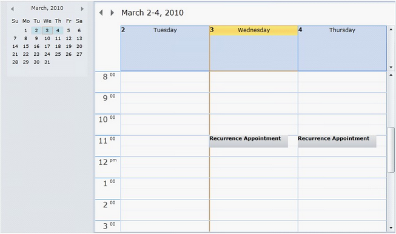

Recurrences appointments for Schedule WPF enable users to add appointment in multiple different dates or time slots.
Key Features
The following are the Key features of Recurrence Appointments
· There are four different types of recurrences: They are:
o Daily
o Weekly
o Monthly
o Yearly
 Note: Daily
Recurrence Type is selected by Default.
Note: Daily
Recurrence Type is selected by Default.
Basic properties
The Recurrence Appointment control exposes the following properties in the top level.
Option Features
· CurrentRecurrencePatternMode—This enables users to choose any one of the Recurrence Type.
· EndOccurenceCount—Provides the number of recurrences happen.
· EndRecurrenceTime—This is a Datetime property which is used to disable recurrence appointment.
Recurrence Type Daily
· IsDailyCustomDays—Set this to true to enable Recurrence Appointment.
· IsDailyCustomDays—Set this to false to enable Recurrence Appointment on Week days alone.
· DailyDays—Enables you to set number of day(s) the appointment is repeated.
Recurrence Type Weekly
· WeeklyWeeks—Enables users to set number of week(s) the appointment is repeated in a particular day.
· IsWeeklySundaySelected—Set this to true to enable every Sunday.
· IsWeeklyMondaySelected—Set this to true to enable every Monday.
· IsWeeklyTuesdaySelected—Set this to true to enable every Tuesday.
· IsWeeklyWednesdaySelected—Set this to true to enable every Wednesday.
· IsWeeklyThursdaySelected—Set this to true to enable every Thursday.
· IsWeeklyFridaySelected—Set this to true to enable every Friday.
· IsWeeklySaturdaySelected—Set this to true to enable every Saturday.
Recurrence Type Monthly
· MonthlyMonth & MonthlyMonthMulti—Enables users to set the number of Month(s) the appointment is repeated in a particular date.
· IsMonthlyCustomDays—Set this to true to enable Recurrence Appointment for a particular date of the month.
· IsMonthlyCustomDays—Set this to false to enable Recurrence Appointment for a particular day of week in the month.
Recurrence Type Yearly
· YearlyYear—Enables you to set the number of Year(s) the appointment is repeated in a particular day.
· IsYearlyCustomDays—Set this to true to enable Recurrence Appointment for a particular day in the particular month.
· IsYearlyCustomDays—Set this to false to enable Recurrence Appointment for a particular day of week in the particular month.
Creating a Recurrence Appointments for Schedule Control
· Add recurrence appointments to the Schedule control using the Appointment property.
Set IsRecurrenceAppointment to true to enable Appointment as Recurrence Appointment.
The following code illustrates this.
|
[XAML] <schedule:Schedule.Appointments> <schedule:ScheduleAppointmentCollection> <schedule:ScheduleAppointment IsRecurrenceAppointment="True" StartRecurrenceTime="3/3/2010" StartTime="3/3/2010 11:00:00 AM" EndTime="3/3/2010 11:30:00 AM" Subject="Recurrence Appointment" Location="Beach Road" /> </schedule:ScheduleAppointmentCollection> </schedule:Schedule.Appointments> |
When the code runs, the following output displays.
